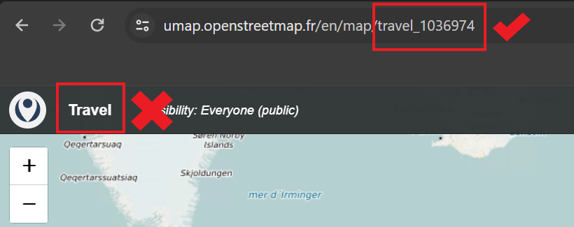

Some commands and issues you might want to know when building the website using Hugo, including inserting images and resize and center images,adding emoji, travel map, linking to pages and titles, and so on.
Why we need to add ../ in front of images folder, altough hugo.md file and images folder are at the same level?
Because Hugo system sees hugo.md as a foler too. However, Hugo system sees _index.md as a file! Therefore, If we want to insert iamges in _index.md file, the command will be like:
In { {< openstreetmap mapName="<your map name>" >} }, the <your map name> is not the name you give to your map, but the name in the website link of your map. For example, I created a map whose name is Travel, I need to use travel_1036974 in the hugo shortcode.

Why my local website doesn’t update after I update my markdown files?
#
Good question. I also find my local website does not update although I have save my changes. I am not clear the excat reason, but It works well if I Press Ctrl+C to stop the local host, and hugo server again, I can see the updated website in http://localhost:1313/.
I am in now.md file now, and there is another page.md which has #Title I want to link. I want to link to page.md and link to #Title I want to link.
In page.md file, add an anchor:
# Title I want to link {#anchor}
In now.md file, add commands:
[text] ( {{<ref"./pages.md">}} ) # link to one page
[text] ( {{<ref"./pages.md#anchor">}} ) # link to the title